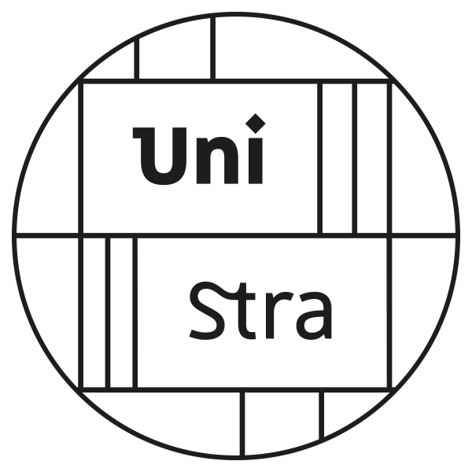
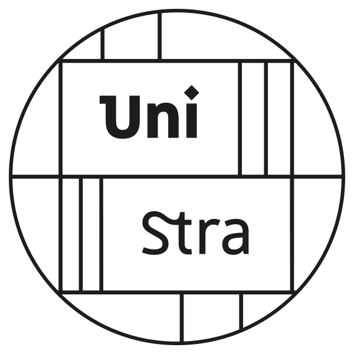
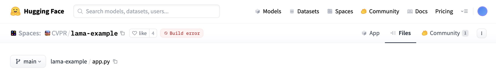

flowchart TD
A[Paper Published] --> B{Industry Contact};
B --> C[2 weeks later: code fails];
C --> D[Opportunity lost];
A --> E{Journal Extension};
E --> F[3 Weeks to reproduce own results];
F --> G[Time lost];
A --> H{GitHub Repo};
H --> I[3 “Doesn't work” issues];
I --> J[Impact Limited];
classDef default color:#ddddee, fill:#1d1d2a, border:#ddddee;
Pillar
Reproducible Research: From Code to Career
How to save time, build trust, and maximize your impact
Quentin Bammey (EPFL, IVRL), Gabriele Facciolo (ENS Paris-Saclay, Centre Borelli), Adrien Krähenbühl (Unistra, ICube)

 

A new SOTA has been established!
The Researcher’s Journey: A Case Study
Let’s walk through a realistic attempt to run the code from a newly published paper.
$ python train.py
Traceback (most recent call last):
File "train.py", line 5, in
from fancy_layers import CustomAttentionBlock
ModuleNotFoundError: No module named 'fancy_layers' $ python train.py --fix_dependencies
Running feature extraction...
File "train.py", line 73, in
features = extract_features(data)
File "/app/utils/features.py", line 31, in extract_features
fd, hog_image = hog(image, orientations=8, visualise=True)
TypeError: hog() got an unexpected keyword argument 'visualise' $ python train.py --fix_dependencies --legacy_skimage --fix_paths
Model training started...
Data loaded successfully.
Epoch 1/100
[...]
File "/opt/conda/lib/python3.8/site-packages/torch/nn/functional.py", line 2854, in linear
return torch.addmm(bias, input, weight.t())
RuntimeError: CUDA out of memory. Tried to allocate 12.58 GiB (GPU 0; 15.90 GiB total capacity)$ python train.py --fix_dependencies --legacy_skimage
Model training started...
Loading data...
Traceback (most recent call last):
File "train.py", line 150, in
dataset = H5Dataset(config['dataset_path'])
File "/app/utils/data.py", line 17, in __init__
self.h5_file = h5py.File(path, 'r')
FileNotFoundError: [Errno 2] No such file or directory: '/home/clara/data/grestsi_dataset/train_set.h5' Our Collective Technical Debt

- The magic parameter
alpha = 0.87(source: unknown). - “It worked yesterday, I swear.”
requirements.txt:numpy,pytorch(Reality: 58 hidden packages).- The true hero of every project:
Final_Final_v2_really_final.ipynb.
A Tale of Two Researchers
One Year Later: Clara’s Path
The Sprinter’s Journey
One Year Later: Maria’s Path
The Builder’s Journey
flowchart TD
A[Paper Published] --> B{Industry Contact};
B --> C[Demo & Container work instantly];
C --> D[Collaboration Gained];
A --> E{Community};
E --> F[Code used as baseline];
F --> G[Reputation Built];
A --> H{GitHub Repo};
H --> I[150 Stars, Pull Requests];
I --> J[Impact Multiplied];
classDef default color:#ddddee, fill:#1d1d2a, border:#ddddee;
The Core Principle
\[Impact = Performance \times Usability\]
A brilliant result that no one can use has an impact of zero.
Reproducibility turns your paper from a claim into a contribution.
Our Goal Today: The Builder’s Toolkit
- The Framework: Define the pillars of reproducibility.
- The Toolbox: Go from a messy script to a clean, usable and understandable implementation.
- The Payoff: Create and deploy an interactive web demo of your code in minutes.
You will leave here with a concrete plan to become a ‘Builder’.
The pillars of reproducibility
To understand these concepts, let’s run a simple experiment: can a small neural network tell the difference between a T-shirt and a pair of Trousers?
import numpy as np
from sklearn.datasets import fetch_openml
from sklearn.model_selection import train_test_split
from sklearn.neural_network import MLPClassifier
from sklearn.metrics import accuracy_score
import plotly.graph_objects as go
# Function to run one complete experiment
def run_experiment(seed):
# Load the Fashion-MNIST dataset
X, y = fetch_openml('Fashion-MNIST', version=1, return_X_y=True, as_frame=False, parser='liac-arff')
# Filter for two classes: 'T-shirt' (0) and 'Trouser' (1)
tshirt_trouser_indices = np.where((y == '0') | (y == '1'))
X_subset, y_subset = X[tshirt_trouser_indices], y[tshirt_trouser_indices]
# Split the data with a fixed random_state
X_train, X_test, y_train, y_test = train_test_split(
X_subset, y_subset, test_size=0.2, random_state=seed
)
# Define and train a model with a fixed random_state
model = MLPClassifier(hidden_layer_sizes=(50,), max_iter=10, random_state=seed)
model.fit(X_train, y_train)
# Evaluate and return the accuracy
predictions = model.predict(X_test)
return accuracy_score(y_test, predictions)Repeatability: “Can I get the exact same result twice?”
The key to this is to record and describe the procedure used to run the code, and fix the random state
Seed used for both runs: 42
Accuracy of Run 1: 0.9850
Accuracy of Run 2: 0.9850Perfect match. This is repeatability.
Pillar 2: Reproducibility
Reproducibility: “Does my finding hold if we change the random seed?”
The goal is to reach the same scientific conclusion, even if the numbers aren’t identical.
# We re-use the run_experiment function from the previous slide.
# Run the experiment 5 times with different seeds
seeds = [0, 42, 101, 1337, 2025]
accuracies = []
for seed in seeds:
acc = run_experiment(seed)
accuracies.append(acc)
print(f"Seed: {seed:<4} -> Accuracy: {acc:.4f}")Seed: 0 -> Accuracy: 0.9904Seed: 42 -> Accuracy: 0.9850Seed: 101 -> Accuracy: 0.9904Seed: 1337 -> Accuracy: 0.9868
Seed: 2025 -> Accuracy: 0.9850Accuracy remains similar: this is reproducibility.
Pillar 3: Replicability
Replicability: “Is my finding a real phenomenon, or a quirk of my dataset?”
The gold standard: testing if a scientific discovery holds up under a new, independent study.
Let’s challenge our finding by applying the same model to a new task: telling ‘Sandals’ from ‘Ankle Boots’.
def run_replication_experiment(seed, class1_label, class2_label):
# Load the same Fashion-MNIST dataset
X, y = fetch_openml('Fashion-MNIST', version=1, return_X_y=True, as_frame=False, parser='liac-arff')
# Filter for two NEW classes: 'Sandal' (5) and 'Ankle Boot' (9)
sandal_boot_indices = np.where((y == class1_label) | (y == class2_label))
X_subset, y_subset = X[sandal_boot_indices], y[sandal_boot_indices]
# Split, train, and evaluate using the same model architecture
X_train, X_test, y_train, y_test = train_test_split(
X_subset, y_subset, test_size=0.2, random_state=seed
)
model = MLPClassifier(hidden_layer_sizes=(50,), max_iter=10, random_state=seed)
model.fit(X_train, y_train)
return accuracy_score(model.predict(X_test), y_test)
# Run the replication experiment
accuracy_replication = run_replication_experiment(seed=42, class1_label='5', class2_label='9')
# For comparison, let's use our first result
accuracy_original = accuracy_run_1
#print(f"Original Task (T-shirt vs Trouser) Accuracy: {accuracy_original:.4f}")
print(f"Replication Task (Sandal vs Boot) Accuracy: {accuracy_replication:.4f}")Replication Task (Sandal vs Boot) Accuracy: 0.9800The core discovery holds up under new scrutiny. This is the gold standard: replicability.
Beyond Running Code: Algorithmic Reproducibility

{kind=link}
{kind=link}
{kind=link}
So far, we’ve focused on re-running existing code. Now, we ask the deeper questions:
- If your code vanished, could someone rebuild it from your paper alone? (Longevity)
- Does your code contain “secret features” not shown in the blueprint? (Validation)
A Rogues’ Gallery of Vague Papers

Crime: Unexplained constants critical to performance. Example: learning_rate = 0.00137.

Crime: Hand-wavy descriptions of data preparation. Example: “…images were normalized…”
{kind=link}
Crime: Crucial implementation details absent from the paper. Example: Gradient clipping, specific weight initialization, filtering out detections in saturated areas.
{kind=link}
A Checklist for Clarity
A paper that perfectly describes its method is resilient and trustworthy. Here’s how to write one.
A Checklist for Clarity
A Gold Standard
Journals like IPOL (Image Processing On Line) are built on algorithmic reproducibility. The implementation and article are peer-reviewed side-by-side to ensure the article details the method well-enough that it could be re-implemented from scratch. This guarantees the method’s preservation and validity.
A Checklist for Clarity
A Gold Standard
Journals like IPOL (Image Processing On Line) are built on algorithmic reproducibility. The implementation and article are peer-reviewed side-by-side to ensure the article details the method well-enough that it could be re-implemented from scratch. This guarantees the method’s preservation and validity.
From zero to Reproducible
Starting Point: The Research Notebook
- ✅ Rapid exploration & prototyping
- ✅ Easy visualization
- ❌ Non-linear execution hides the true workflow
- ❌ “Hidden state” makes results hard to trust
- ❌ Impossible to use as a simple tool
How do we turn this sketch into a reliable tool?
{kind=link}
Level 1: Scripts & A Blueprint
The first step is to create a clear, reusable structure.
{kind=link}
Level 2: The Basic Parts List
Your code can’t run in a vacuum. You must specify all its dependencies with pinned versions.
But: a requirements.txt doesn’t lock the dependencies of your dependencies. Results can still vary.
Level 3: The Complete Bill of Materials
- Solution: Lock the entire environment with modern tools.
- Our Choice:
uv. - Why? It’s incredibly fast, all-in-one (installer, venv manager), and creates a perfect, reproducible lock file.
Hands-On: A Perfect Python Environment
1. For the Author
Use uv from the beginning, even when experimenting and developing!
To use libraries without packaging them in the final environment (e. g. Jupyter notebooks):
When Python Isn’t Enough…
What about dependencies on the operating system itself?
{kind=link}
Level 4: The ‘Computer in a File’
Solution: A Container (like Docker) packages everything: Code + Python Environment + OS Libraries.
Hands-On: The Dockerfile Recipe
# Start from a specific Python base image
FROM python:3.11-slim
# Set working directory
WORKDIR /app
# Install uv
RUN pip install uv
# Copy ONLY the lock files
COPY pyproject.toml uv.lock ./
# Install the exact Python env
RUN uv sync --no-cache
# Copy the rest of your code
COPY . .
# Define a default command
CMD ["uv", "run", "python", "predict.py"]Now anyone with Docker can run your code, identically, everywhere.
Summary: Climbing the Ladder
{kind=link}
Even with a perfect container, some challenges remain…
The CUDA Challenge
The Problem: A dependency matrix of Hardware → Driver → Toolkit → Library.
Solution Part 1: Inside the Container
Use NVIDIA’s official base images in your Dockerfile to lock the CUDA Toolkit.
Solution Part 2: On the Host
The user needs the NVIDIA Container Toolkit and a sufficiently new driver.
Your Job: Be explicit! State the required driver version in your README.md.
Remaining Obstacles: Data & Hardware
The Data Barrier
- Size: Provide download scripts; use DVC.
- Access: Offer a “demo mode” with public/synthetic data.
- Format: Document precisely and provide conversion scripts.
The Hardware Chasm
- CPU (x86/ARM): Provide multi-arch Docker builds.
- RAM/Resources: Document minimum requirements clearly.
Remaining Obstacles: Software Dependencies
{kind=link}
The Solution
- Containerization is essential. Your
Dockerfilemust install all required runtimes. - Be transparent about paid licenses (e.g., MATLAB) in your
README.
The Final Mile: Usability
Even if code is runnable, is it usable?
Problem: A command line with dozens of obscure, undocumented flags is hostile to users.
Solution: Use libraries like Typer or Argparse to create a clean, self-documenting CLI with help text.
Problem: A user clones your repository but has no correctly formatted data to test the predict.py script.
Solution: Always include a sample_data/ directory and a run_demo.sh script. A “Quick Start” that runs in seconds is invaluable.
Problem: The command line is still a major barrier for many potential users (collaborators, industry, other fields).
Solution: Wrapping your script in an online demo makes it universally accessible and dramatically increases its impact.
Creating a demo
Why Bother Making a Demo?
A demo transforms your research from a static paper into a living tool.
👁️
Visibility & Impact
Go beyond the PDF. A demo makes your work discoverable and understandable to a much wider audience.
💬
Usability & Feedback
Let people use your research. It’s the fastest way to test replicability, get feedback, find bugs, and spark collaborations.
✅
Proof of Work
A working demo is the ultimate proof that your code isn’t just theory. It runs, it works, and it builds trust.
Our demo target
Create a demo with Streamlit
{kind=link}
What is it? An open-source Python library to build and share web apps for machine learning and data science.
Why Streamlit for this tutorial?
- It’s just a Python script. No HTML/CSS/JS required.
- It turns data scripts into shareable apps in minutes.
- The development workflow is fast and intuitive.
Example 1: A Minimal Demo
Here’s how to wrap a function in a simple user interface.
# app.py
import io
import numpy as np
import streamlit as st
from PIL import Image
import run # your run.py in the same folder
st.set_page_config(page_title="OT Color Transfer (tutorial)", layout="centered")
st.title("🎨 OT Color Transfer (tutorial)")
# uploads
base_file = st.file_uploader("Base image (to stylize)", type=["jpg", "jpeg", "png"])
target_file = st.file_uploader("Target image (style source)", type=["jpg", "jpeg", "png"])
# parameters (defaults match run.py)
col1, col2 = st.columns(2)
with col1:
downscale = st.number_input("Downscale size", min_value=8, max_value=256, value=50, step=1)
metric = st.selectbox("Metric", ["l2", "l1"], index=0)
with col2:
reg = st.number_input("Entropic reg (0 = EMD)", min_value=0.0, value=0.0, step=0.01, format="%.4f")
sinkhorn_max_iter = st.number_input("Sinkhorn max iters", min_value=100, max_value=20000, value=1000, step=100)
run_btn = st.button("Run")
if run_btn:
if base_file is None or target_file is None:
st.warning("Please upload both images.")
else:
# load to [0,1] float RGB
base_img = np.asarray(Image.open(base_file).convert("RGB"), dtype=np.float64) / 255.0
target_img = np.asarray(Image.open(target_file).convert("RGB"), dtype=np.float64) / 255.0
styl = run.color_transfer_ot(
base_img=base_img,
target_img=target_img,
downscale=int(downscale),
metric=metric,
reg=float(reg),
sinkhorn_max_iter=int(sinkhorn_max_iter),
)
st.subheader("Result")
st.image(styl, use_container_width=True)
# quick download
buf = io.BytesIO()
Image.fromarray((np.clip(styl, 0, 1) * 255).astype(np.uint8)).save(buf, format="PNG")
st.download_button("Download PNG", data=buf.getvalue(), file_name="stylized.png", mime="image/png")
Deploying Your Demo
Locally : uv run streamlit run app.py (or, without uv, streamlit run app.py)
Making your app public is also easy and free with Streamlit Community Cloud.
Key Steps:
- Put your app,
pyproject.toml,uv.lock, and apackages.txtfile in a public GitHub repo. - In Streamlit Cloud, link your repo.
- Point to your main file path (e.g.,
demo/app.py). - Click Deploy!
How Far Can You Go? A Polished App
With a bit more code, a simple demo can become a polished application with caching, state management, and a better layout.
import io
import numpy as np
import streamlit as st
from PIL import Image
from pathlib import Path
# --- Import your research function ---
import run
# --- Define the directory of the current script to find example images ---
# This is the key to making file paths robust. `Path(__file__)` gets the path
# to this .py file, and `.parent` gets the directory it's in.
SCRIPT_DIR = Path(__file__).parent
# --- Page Configuration ---
st.set_page_config(
page_title="OT Color Transfer (Advanced)",
layout="wide"
)
# --- Caching the Core Function ---
@st.cache_data
def cached_color_transfer(base_img_bytes, target_img_bytes, downscale, metric, reg, sinkhorn_max_iter):
"""
A wrapper around the core function to make it cacheable.
We pass image bytes instead of numpy arrays because arrays are not hashable.
"""
base_img = np.asarray(Image.open(io.BytesIO(base_img_bytes)).convert("RGB"), dtype=np.float64) / 255.0
target_img = np.asarray(Image.open(io.BytesIO(target_img_bytes)).convert("RGB"), dtype=np.float64) / 255.0
return run.color_transfer_ot(
base_img=base_img,
target_img=target_img,
downscale=int(downscale),
metric=metric,
reg=float(reg),
sinkhorn_max_iter=int(sinkhorn_max_iter),
)
# --- Helper function to load example images using pathlib ---
def load_example_image(image_filename):
"""Loads an image from a path relative to the script's directory."""
# Construct the full, absolute path to the image
image_path = SCRIPT_DIR / image_filename
with open(image_path, "rb") as f:
return f.read()
# --- Main App UI ---
st.title("🎨 Advanced OT Color Transfer")
st.write("This demo showcases a more robust Streamlit app with caching, state management, and error handling.")
# --- Sidebar for Inputs and Parameters ---
with st.sidebar:
st.header("Inputs")
# 2. Update the example options with your filenames and names
example_options = {
"Example 1": ("B2.jpg", "A1.jpg"),
"Example 2": ("B2.jpg", "C1.jpg"),
}
source_type = st.radio("Choose image source:", ["Upload your own", "Use an example"], index=1) # Default to example
if source_type == "Upload your own":
base_file = st.file_uploader("Base image (to stylize)", type=["jpg", "jpeg", "png"])
target_file = st.file_uploader("Target image (style source)", type=["jpg", "jpeg", "png"])
else:
selected_example = st.selectbox("Select an example:", list(example_options.keys()))
base_filename, target_filename = example_options[selected_example]
# Use our robust helper function to load the images
base_file = load_example_image(base_filename)
target_file = load_example_image(target_filename)
st.header("Parameters")
with st.expander("Algorithm Controls", expanded=True):
downscale = st.number_input("Downscale size", 8, 256, 50, 1)
metric = st.selectbox("Metric", ["l2", "l1"], 0)
reg = st.number_input("Entropic reg (0 = EMD)", 0.0, 1.0, 0.0, 0.01, format="%.4f")
if reg > 0:
sinkhorn_max_iter = st.number_input("Sinkhorn max iters", 100, 20000, 1000, 100)
else:
sinkhorn_max_iter = 1000
run_btn = st.button("Run Style Transfer", type="primary")
# --- Main Area for Displaying Images ---
col1, col2 = st.columns(2)
if base_file is not None:
col1.image(base_file, caption="Base Image", use_container_width=True)
if target_file is not None:
col2.image(target_file, caption="Target Style", use_container_width=True)
if run_btn:
if base_file is None or target_file is None:
st.warning("Please provide both a base and a target image.")
else:
base_bytes = base_file.getvalue() if hasattr(base_file, 'getvalue') else base_file
target_bytes = target_file.getvalue() if hasattr(target_file, 'getvalue') else target_file
with st.spinner('Stylizing image... this may take a moment.'):
try:
stylized_image = cached_color_transfer(
base_bytes, target_bytes, downscale, metric, reg, sinkhorn_max_iter
)
st.session_state['last_result'] = stylized_image
except Exception as e:
st.error(f"An error occurred during processing: {e}")
if 'last_result' in st.session_state:
del st.session_state['last_result']
if 'last_result' in st.session_state:
st.divider()
st.header("Result")
result_image = st.session_state['last_result']
st.image(result_image, caption="Stylized Result", use_column_width=True)
buf = io.BytesIO()
Image.fromarray((np.clip(result_image, 0, 1) * 255).astype(np.uint8)).save(buf, format="PNG")
st.download_button(
"Download Result",
data=buf.getvalue(),
file_name="stylized_result.png",
mime="image/png"
)
Alternatives to Streamlit
Streamlit is great, but other tools might be better for specific needs.
{kind=link}
Demo Decay: When 🤗 Links Break
- Many recent Computer Vision papers advertise a 🤗 demo in their README.
- After 1–2 years, a surprising number fail: 
- other ex. UniCL (CVPR 2022), MonoScene (CVPR 2022), TokenCut (CVPR 2022) …
- Implication:
- Initial excitement (easy try-it-yourself)
- → Rapid decay (hard to reproduce/interact later)
- Initial excitement (easy try-it-yourself)
Lesson: Reproducibility alos imply maintaining
Towards full reproducibility
- Image Processing On Line (IPOL) is a journal and demo system
- Submissions to IPOL are tripartite:
- an article containing a complete description (with pseudo-code) of the implementation, and enabling its reconstruction from scratch
- an implementation, that is peer-reviewed to assert that it matches the article
- an online demo
IPOL demo: a Dockerfile
FROM registry.ipol.im/ipol:v2-py3.11
COPY --from=ghcr.io/astral-sh/uv:latest /uv /uvx /bin/
# Copy the code to $bin
ENV bin /workdir/bin/
RUN mkdir -p $bin
WORKDIR $bin
COPY . .
# sync dependencies
RUN uv sync
# the execution will happen in the folder /workdir/exec
# it will be created by IPOL
# some QoL tweaks
ENV PYTHONDONTWRITEBYTECODE 1
ENV PROTOCOL_BUFFERS_PYTHON_IMPLEMENTATION python
ENV PATH $bin:$PATH
# $HOME is writable by the user `ipol`, but
ENV HOME /home/ipol
# chmod 777 so that any user can use the HOME, in case the docker is run with -u 1001:1001
RUN groupadd -g 1000 ipol && useradd -m -u 1000 -g 1000 ipol -d $HOME && chmod -R 777 $HOME
USER ipolIPOL demo: a JSON description
{
"general": {
"demo_title": "Gretsi 2025 Ipol demo: OT colour transfer",
"requirements": "docker"
},
"build": {
"url": "git@github.com:qbammey/reproducible_research_gretsi.git",
"rev": "origin/main",
"dockerfile": "Dockerfile"
},
"inputs": [
{
"type": "image",
"description": "Base image to stylize.",
"max_pixels": "1024*1024",
"dtype": "3x8i",
"ext": ".png"
},
{
"type": "image",
"description": "Style target",
"max_pixels": "1024*1024",
"dtype": "3x8i",
"ext": ".png"
}
],
"params": [
{
"id": "downscale",
"description": "Downscale level",
"label": "Lower:faster, higher:finer",
"type": "numeric",
"values": {
"min": 5,
"max": 50,
"default": 30
}
},
{
"id": "metric",
"description": "Metric to use",
"label": "Use L1 for outlier robustness",
"type": "selection_radio",
"values": {
"L1": "l1",
"L2": "l2"
},
"default_value": "l2"
},
{
"id": "reg",
"description": "Regularization",
"label": "Entropic regularization for Sinkhorn. Set 0.0 to use EMD (original behaviour), >0 for faster/smoother transport on larger problems",
"type": "range",
"values": {
"min": 0,
"max": 0.1,
"step": 0.005,
"default": 0
}
},
{
"id": "smi",
"description": "Synkhorn max iterations",
"type": "numeric",
"values": {
"min": 200,
"max": 1000,
"default": 1000
},
"visible": "(params.reg>0.001)"
}
],
"run": "uv --project $bin run $bin/example_demo/examples/outlier_colour_transfer/run.py --base $input_0 --target $input_1 --output out.png --downscale $downscale --metric $metric --reg $reg --sinkhorn-max-iter $smi",
"results": [
{
"type": "gallery",
"contents": {
"Base image": {
"img": "input_0.png"
},
"Style target": {
"img": "input_1.png"
},
"Result": {
"img": "out.png"
}
}
},
{
"contents": "stdout.txt",
"label": "<p>Output</p>",
"type": "text_file"
}
],
"archive": {
"archive_always": true,
"enable_reconstruct": true,
"files": {
"input_0.png": "Base image",
"input_1.png": "Style target",
"out.png": "Result"
},
"params": [
"downscale",
"metric",
"reg",
"smi"
]
}
}IPOL demo
To conclude
- Designing clean, reproducible, and easy-to-use implementations helps build trust and maximize your impact.
- Small cost up-front, will save you (and others) lots of time
- Once the code is well-packaged with clear dependencies, easy to turn into a demo
- Still some obstacles such as hardware dependencies, but this is getting better.
- Beyond implementation reproducibility: algorithm reproducibility is essential to trust what the code does (e. g. IPOL article)